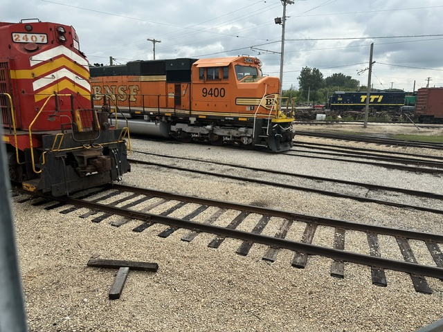
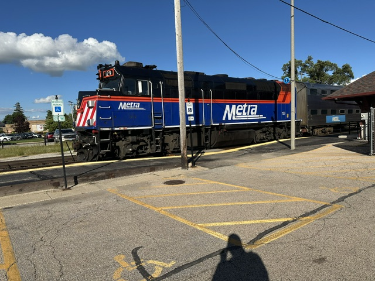
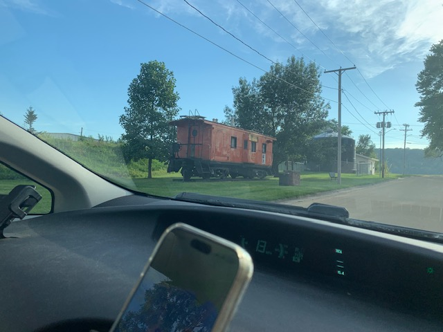
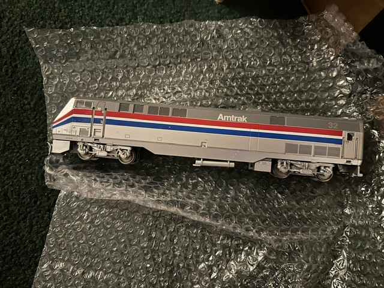
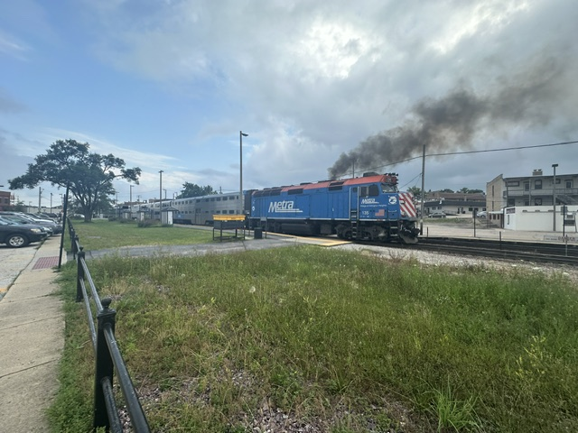
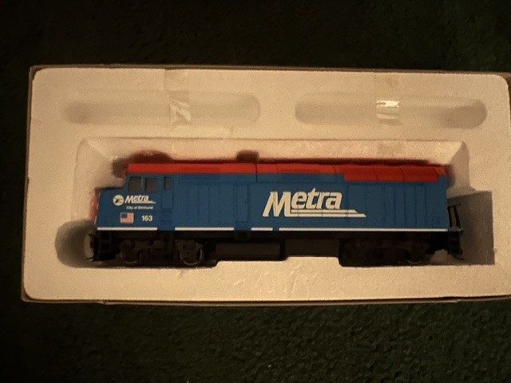

At Barn 2
Green Bay & Western RSD15 2407 and BNSF SD70MAC 9400.

Metra at Woodstock
Metra F40PH 129 at the Woodstock station.

Milwaukee Caboose
A distant view of a Milwaukee caboose at Sabula.

Amtrak P42DC
A model (by Athearn) of Amtrak P42DC number 32 in Phase III paint.

Metra F40PH
A Metra F40PH locomotive at Woodstock.

Metra F40PH Model
A Walthers Trainline model of Metra F40PH 163, City of Elmhurst.